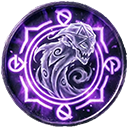
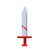
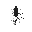
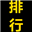
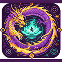
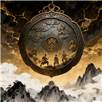

轮回者
被选中的单位 · 一阶 ~ 十阶
- 每隔 10 年（可调 1~100）接一次任务：默认直接发奖；打开「生成骷髅」则改成生成一只挑战骷髅，属性 1:1 复刻 × 档位系数，5 年内打死即完成。
- 完成奖励永久增加 伤害 / 生命 / 攻速 / 移速 / 寿命 / 防御值 / 免伤 / 破免伤 与轮回币，全部按阶数加成放大（一阶 ×1 → 十阶 ×50000）。
- 击杀任何生物都掉 轮回币与经验；击杀轮回者还能收割对方一半轮回消耗、并按比例掠夺其数值。
CORE GAMEPLAY
三个系统一条线串起来玩，构成这个模组的主循环。
被选中的单位 · 一阶 ~ 十阶
轮回者的复活点
你自己上架、自己定价
默认配置：十年一次任务、三个倍率都 ×1。级别每轮重掷（D 50% / C 25% / B 15% / A 7% / S 3%）， 下表是加权后的期望值；窄屏可以左右滑动表格。
| 任务级别 | 伤害 / 经验 / 轮回币 / 寿命 | 生命 | 攻速 | 移速 | 防御值 | 免伤 / 破免伤 |
|---|---|---|---|---|---|---|
| D 级（50%） | 1.5 | 7.5 | 0.125 | 1 | 10% 概率 +1 | — |
| C 级（25%） | 3.5 | 15 | 0.35 | 1.5 | 30% 概率 +2 | — |
| B 级（15%） | 7.5 | 30 | 0.75 | 3 | 60% 概率 +4 | — |
| A 级（7%） | 12.5 | 50 | 1.5 | 5 | 90% 概率 +8 | 5% 概率各 +1% |
| S 级（3%） | 22.5 | 90 | 4 | 9 | 100% 概率 +16 | 10% 概率各 +2% |
| 加权期望 | 4.3 | 18.2 | 0.4875 | 1.945 | 1.544 | 0.0095% |
| 项目 | 一阶 ×1 | 二阶 ×2 | 三阶 ×5 | 四阶 ×15 | 五阶 ×40 | 六阶 ×100 | 七阶 ×300 | 八阶 ×800 | 九阶 ×2000 | 十阶 ×50000 |
|---|---|---|---|---|---|---|---|---|---|---|
| 轮回币 | 4.3 | 8.6 | 21.5 | 64.5 | 172 | 430 | 1,290 | 3,440 | 8,600 | 21.5万 |
| 伤害 | 4.3 | 8.6 | 21.5 | 64.5 | 172 | 430 | 1,290 | 3,440 | 8,600 | 21.5万 |
| 经验 | 4.3 | 8.6 | 21.5 | 64.5 | 172 | 430 | 1,290 | 3,440 | 8,600 | 21.5万 |
| 生命 | 18.2 | 36.4 | 91 | 273 | 728 | 1,820 | 5,460 | 14,560 | 36,400 | 91万 |
| 攻速 | 0.49 | 0.98 | 2.44 | 7.31 | 19.5 | 48.75 | 146.3 | 390 | 975 | 24,375 |
| 移速 | 1.95 | 3.89 | 9.73 | 29.2 | 77.8 | 194.5 | 583.5 | 1,556 | 3,890 | 97,250 |
| 寿命 | 4.3 年 | 8.6 年 | 21.5 年 | 64.5 年 | 172 年 | 430 年 | 1,290 年 | 3,440 年 | 8,600 年 | 21.5 万年 |
| 防御值 | 1.544 | 3.09 | 7.72 | 23.2 | 61.8 | 154.4 | 463.2 | 1,235 | 3,088 | 77,200 |
★ 免伤 / 破免伤不吃阶数加成：每阶每任务恒为 +0.0095%（只乘配置页「属性倍率」），且两项永远相等（一次抽奖、两项一起给）。
| 晋级 | 门槛经验 | 该阶加成 | 每任务期望经验 | 期望任务数 | 该阶耗时 | 累计年数 | 到该阶时累计轮回币 |
|---|---|---|---|---|---|---|---|
| 1 → 2 | 100 | ×1 | 4.3 | 23 | 233 年 | 233 年 | 100 |
| 2 → 3 | 900 | ×2 | 8.6 | 105 | 1,047 年 | 1,280 年 | 1,000 |
| 3 → 4 | 8,000 | ×5 | 21.5 | 372 | 3,721 年 | 5,001 年 | 9,000 |
| 4 → 5 | 7.5万 | ×15 | 64.5 | 1,163 | 1.16 万年 | 1.66 万年 | 8.4万 |
| 5 → 6 | 70万 | ×40 | 172 | 4,070 | 4.07 万年 | 5.73 万年 | 78.4万 |
| 6 → 7 | 650万 | ×100 | 430 | 15,116 | 15.12 万年 | 20.85 万年 | 728.4万 |
| 7 → 8 | 6,000万 | ×300 | 1,290 | 46,512 | 46.51 万年 | 67.36 万年 | 6,728.4万 |
| 8 → 9 | 5.5亿 | ×800 | 3,440 | 159,884 | 159.88 万年 | 227.24 万年 | 6.17亿 |
| 9 → 10 | 50亿 | ×2000 | 8,600 | 581,395 | 581.4 万年 | 808.6 万年 | 56.17亿 |
★ 「累计轮回币」正好等于各阶门槛之和 —— 因为每任务拿到的币与经验同量级、走同一套阶数加成。
对照下面价目表：八阶 6,728.4万 / 九阶 6.17亿 / 十阶 56.17亿 ⇒ 10 亿那件「死亡变强系统」正是十阶的消费目标。
★ 配置页倍率：经验倍率 ×N → 上表耗时 ÷N；属性 / 轮回币倍率 ×N → 收益 ×N（三倍率都拉满时升到十阶约 8.09 万年）。
CONTENT LIBRARY
31 个内容分在四个页签里，每一个都能在「自定义内容数据」里逐项改数字，改完立即生效。
传说中六道仙人的眼睛：攻击命中即天降双陨石（第二颗 3 倍），全属性大幅提升（生命 +50 万/+100%、伤害 +5 万/+100%、防御值 +5 万、免伤 / 破免伤各 +100%、寿命 +1 万年、每秒回血 = 5000 + 最大生命的 20%），可无视地形。
攻击 / 被攻击时自动开启「须佐能乎」，并大幅提升生命、伤害、移速、攻速与暴击率。
宇智波一族的血脉：生命 / 伤害 / 移速 / 攻速 / 暴击率全面提升，与更高档的眼睛互斥。

击杀成长：每次击杀叠加属性、掠夺目标总属性、吞噬其能力；累计击杀还会解锁免伤、无视地形、攻击连锁与免疫负面。
燃烧寿命换取全方位增幅：生命 / 伤害各 +2000 且 +200%，移速 / 攻速各 +50 且 +200%；代价是寿命 -20%（有「缘一的体质」时免疫，轮回或重生一次后也自动解除）。
破免伤 +100%、伤害 +10 万且 +500%、生命 +1 万且 +100%，另有免伤 / 自身闪避率 +80% / 移速 / 攻速 / 攻击范围加成；自动附带「斑纹」「赫刀」「通透世界」，并免疫斑纹的寿命副作用。
闪避率 = 移速项（自身移速 ÷ 对方移速 × 100 − 100）+ 自身闪避率，封顶 0~100%；掷中即整段无视一次来袭伤害连同附带效果（真理之书与永恒之火无法被闪避）。
生命 +10 万且 +100%、寿命 +9 亿年、每秒回复最大生命的 10%，另有伤害 / 免伤 / 破免伤 / 移速 / 攻速 / 攻击范围加成。
「天上地下，为我独尊」：生命 +60 万且 +60%、伤害 +6 万且 +60%、防御值 +60 万，另有免伤 / 闪避 / 破免伤各 +600%（免伤无上限＝完全免伤，闪避封顶＝必定闪避）。
攻击命中时（冷却 1 游戏年）以自身为中心升起直径 50 格的圆形地形框架——内外两圈「山」、中间一圈再叠「光之墙」，范围内的建筑 / 植物 / 道路一律摧毁；圈内生物（自己除外）的 AI 被直接停掉（不动、不打、不干活，不给任何特质/状态），10 秒后地形还原、行动恢复。
智力 +1000 且 +1000%；攻击智力低于自己者造成 21 亿物理伤害，无视对方的免伤与防御值（这一击不可被闪避）。
攻击改为施加「死亡标记」；每 1 游戏年点名敌方阵营击杀数最高的 5 位，每人 9 亿物理伤害。
伤害 / 生命 +900000000、防御值 +9000000、免伤与破免伤 +50%；血量过低时爆发，对全图一半敌人造成巨额物理伤害。
受到致命伤时原地复活：修为 / 特质 / 氏族 / 阵营关系全部保留，年龄回 18 岁；每次复活永久叠加属性。
另外每死 2 次（复活次数 ÷ 2，向下取整）额外 免伤 / 破免伤 / 闪避率 各 +1%（可调）：死 1 次不给、死 2 次 +1%、死 4 次 +2%，无上限叠加。
生命 / 伤害 / 防御值 / 移速 / 攻速 各 +10（可调）。
生命 / 伤害 / 防御值 / 移速 / 攻速 各 +100。
生命 / 伤害 / 防御值 / 移速 / 攻速 各 +1000。
五项各 +10000，并开始额外提供 免伤 / 破免伤 +1%。
五项各 +100000，免伤 / 破免伤 +10%。
五项各 +1000000，免伤 / 破免伤 +100%。
五项各 +10000000，免伤 / 破免伤 +1000%。
伤害 +1000；攻击命中时给目标附加「赫刀之伤」（持续 10 秒）。
受到致命伤时原地满血复活一次（图腾随即消失），复活同时清除全部负面特质与本模组的负面状态。
杀满 6 人，把这 6 人的生命/伤害/移速/攻速总和 ×6 并入自身；之后每杀 1 人持续延长，期间额外免伤、免疫负面、可飞行。
伤害 / 生命 +100%、防御值 +1000、免伤与破免伤 +20%、攻击范围 +20，可跨越地形；由万花筒在战斗中自动开启。
原版「格挡」「闪避」的冷却变为 0，可以无限使用；获得时自动补上这两个原版特质。
看清人体内部结构、命中弱点更容易破防：破免伤 +50%、伤害 +5000 且 +50%、移速 / 攻速 +50、攻击范围 +80。
智力永久锁定为 0，见谁打谁、无法建国；复活与读档后依旧保留。
每秒燃烧生命上限的 40%，无视一切护持与免伤。

从源头掐断一切攻击与施法（含弹道、灵技、神通、法则），登仙等高境界同样生效。
真·时间停止：完全停止 AI 与移动，封锁一切攻击与施法，烈焰与登仙都无法解除；没有任何冰晶与冰冻视觉。
每隔一段时间承受 21 亿物理伤害（受赋予者破免伤加成），无法清除直到该生物死亡。
每秒受到 1000 点物理伤害，且期间无法回复任何血量（回血 / 吸血 / 吃药全部无效）；由「赫刀」命中附加。
SYSTEMS
游戏底部神力栏「主神空间」页就是入口，另外还有修改器与信息面板。
模组设置页 25 项，已按功能分组排序：观察者生成与全图打击、轮回者获得与获得率、任务三开关（轮回币 / 属性 / 经验）、掠夺开关与比例、三个收益倍率、跨存档轮回、骷髅生成间隔与复活年数、商店两开关（模组特质 / 原版特质自动上架）等。

按画笔范围彻底抹除任何单位：连复活与其它模组的存档副本一起清干净。无敌橡皮是原版橡皮擦的满血致死，只是这一记不吃免伤与防御值。两者都不会被闪避。
点击生物类型即可让它灭绝（立刻抹除现存者、此后不再出现）；再点一下恢复。

当前存档里全部活着的轮回者排名（可按轮回币 / 品阶排序），点一条就跳到那个单位。
同一世界唯一、无法被任何方式杀死（含纯移除与强杀通道）、不会被选为目标；攻击命中即抹除目标及其同类同阵营。
窗口顶部四个主按钮：添加特质（体质 · 物品 · 技能 · 状态，右上角「自定义内容数据」可改里面每一个数字）、 修改器（这只生物的全部数据 + 顶部属性搜索栏，改完立即生效且不跳回最上方）、 特质面板、世界排行（详见导航「主神修改器」一栏）。神力栏「主神空间」里的按钮是不绑定生物的全局入口。
选中单位后，原版人物面板右侧自动出现：阶数、任务进度、轮回币、属性加成与内容清单，轮回币还能直接点着改。
昆虫生成动物、动物生成人种的开关与概率（默认 20%，可调），让世界自己演化出人种与王国。
本模组新增的四个通用属性。任何来源的伤害 —— 原版攻击、其它模组的技能直伤、本模组的物品与状态 —— 都按同一口径结算，顺序是：先掷闪避 → 再算百分比免伤 → 最后减防御值，残伤 ≤ 0 即 0 伤害。
百分比减伤，无上限（超过 100% 即完全免伤）。可被对方的「破免伤」按百分点抵消： 对方免伤 100% − 你破免伤 10% → 他实际只剩 90%。对原版 getHit、其它模组直写血量、 鬼谷修仙的中心伤害入口统一生效。
既是攻击属性，也是本模组的「穿透」键（常开，没有开关）。按百分点「减法」吃掉对方的减免： 本模组免伤、鬼谷境界压制（99.99% − 破免伤）、凡人每差 1 境的减伤、玄门 0.1^境界差。 溢出伤害击穿：超出当前生命的伤害会直接扣对方的「天地之力」（鬼谷护体/保命资源），两者都空即击杀。
① 按比例破防御值：本模组防御值 ×（1 − 破免伤%）；原版护甲同样按比例破 （护甲 85 + 破免伤 50% ⇒ 只算 42.5% 的减伤）。
② 穿透别家模组的减伤：凡是挂在 Actor.getHit 上的守方减伤都会被按实测折减系数还原 ——
例如斩神录的境界压制（差 ≥3 境 ×0.02、人类天花板以上每高一境 ×0.5）、西幻 / 龙族等减伤。
这一层不认模组名字，所以以后新装的模组也自动生效。
③ 真伤强制：把「免伤与防御值各自算完、再减去破免伤」之后的那份伤害当真伤打出去 ——
不会被别家继续折、不会被免死层锁血 / 回满、也不吃护盾；打完血量归零就强制走死亡判定
（不再等原版每拍那次检查，开着界面也不会出现「0 血站着不死」）。
★ 死亡仍然走各家的复活机制：本模组的死亡变强 / 不死图腾 / 轮回空间，以及别的模组的复活，照旧生效（可复活）。
以上 ①②③ 只在攻击者破免伤 > 0 时触发；破免伤 0% 时行为与老版本完全一致。 观察者不受影响（那是本模组的「上帝单位」，有自己的免疫通道）。
固定抵消伤害，不足抵消时伤害为 0（不保底 1 点）：
对方 200 伤害 − 你 100 防御 → 只受 100；对方 10 伤害 − 你 1000 防御 → 0 伤害。
实际闪避率 = 移速项 + 自身闪避率，封顶 0~100%：
移速项 = 自身移速 ÷ 对方移速 × 100 − 100。
自身移速 200 / 对方 100 → 100%；自身 150 / 对方 100 → 50%；
自身 100 / 对方 200 → −50%，此时若自身闪避率 80%（缘一的体质）则 −50% + 80% = 30%
（负值不先归零，先加自身闪避率再封顶）。
掷中即整段无视本次伤害连同它的附带效果（赫刀之伤 / 死亡标记 / 死亡笔记点名 / 无限手套爆发都能闪）；
状态跳伤按「施加者移速」算，玩家直接施加的按 1000 移速。
不可被闪避：真理之书碾压、永恒之火、观察者抹除、抹除存在 / 无敌橡皮。
轮回商店里每件商品的默认售价。左边是本模组自带的 25 件内容，右边是原版那些有益特质的建议价； 两边都能在商店里逐件改，改哪件只动哪件。
MODIFIER
窗口里的「世界排行」页 —— 以上帝视角俯视整个世界：世界的每一个生物， 按你随手点的那一项排出高低。鬼谷的修仙倍率、伤害、年龄、寿命、特质、国家、生物类型、职业…… 点哪个就按哪个排。
左栏按四类列出可排的项：属性（原版 + 本模组 + 其它模组注册的全部属性）、 数据键（其它模组写在生物身上的自定义值，如鬼谷的修仙倍率）、特质、 国家 · 生物类型 · 职业。点某个字段 = 按它从高到低排；再点同一个 = 切换升 / 降序。
每一行直接写着 #名次 姓名 · 种族 · 性别 · 国家 · 职业，右侧是所排字段的数值； 右栏搜索框支持名字 / 种族 / 国家 / 职业 / 身上任一特质名 —— 搜「轮回者」就能列出所有带这条特质的生物。
点名单里任意一行，直接进入这个生物的原版人物面板（同时把主神修改器收起，免得挡住面板）； 想改它，就在那个面板上点「主神修改器」。
身上带观察者特质的生物，修改器一律改不动：点下去只会弹出 「主神观察者制裁：本次修改无效」——添加特质、数据修改、特质面板三页都挡。
「修改器」页顶部新增搜索栏：几百项属性 / 数据键 / 特质，输中文直接筛； 改完一个数值不会弹回最上方，接着改下一个就行。
名单分页显示（每页 100 行），左右两栏各自独立滚动；换字段、换升降序是即时重排， 只有点字段 / 改搜索词时才重新扫一遍世界。
游戏底部神力栏「主神空间」栏目 → 点「主神修改器」（这个入口不绑定生物，专门干全局的事）。
窗口顶部点主按钮「世界排行」；左边先选分类（属性 / 数据键 / 特质 / 国家·类型·职业），再点你想排的那一项。
右上角切「顺序：低→高 / 高→低」，搜索框里打名字或种族缩小范围；点一行就跳到它的原版人物面板。
注：从生物面板点进「主神修改器」的是「改这一只生物」的入口（添加特质 / 修改器 / 特质面板）， 不含「世界排行」；世界排行只在这个神力栏入口的窗口里。两个入口右上角都只留「返回」按钮，没有关闭（X）。
QUICK START
神力栏「主神空间」→ 最高存在配置 → 打开「能否获得轮回者特质」（默认关闭，获得率默认 1%）。
等新单位诞生时判定命中，或直接用「主神修改器」手动给某个单位加上轮回者特质。
每 10 年（可调）结算一次任务（默认直接发奖，也可改成刷挑战骷髅），属性与轮回币一起涨，经验攒够自动升阶。
打开「轮回空间」等倒计时，或直接点「立即轮回」；轮回者回来时等级与家当全都在。
COMPATIBLE MODS
已逐个核对过补丁与数据键的模组 · 共 21 个轮回者死亡→轮回空间复活时，会把该单位 ActorData 里的自定义数据原样搬回新身体（本模组自己的 zack_* 另有专门规则）。所以下面这些模组的境界 / 修为 / 词条 / 血脉进度，轮回一次也不会丢。
词条 / 道途 / 境界 / 天劫 / 起源 / 时代标记全在 zhutianshenzuo.*，复活一点不漏。它是「读时折算」派，不写原版属性，两边互不打架。

境界档位 / 斗气 / 异火 / 血脉 / 灵魂 / 纳戒 / 功法 / 妖兽 / 拍卖 全在 doupo_life.*，一起带回来。
神墟境界经验 / 变体 / 渡劫 / 疯狂值 / 共鸣城市 / 神明青睐 全在 zhanshenlu.*。
境界 / 修为 / 真罡 / 神藏 / 道心的 tianren.martial.* 全部保留。
帝路 / 禁区 / 黑暗动乱 / 血脉 / 古路（180+ 个 zhetian.* 键）全部保留。
功法 / 境界 / 突破上限 / 灵兽 / 背包页签数据（xiuxian.*）全部保留。
途径 / 序列 / 恩赐 / 锚点（lotm_*）全部保留。
血统 / 龙位 / 纯度 / 言灵 / 七宗罪 / 天赋（longzu.*）全部保留。
境界 / 真罡 / 阵纹 / 修为（wushu.*）全部保留。
修为 / 道途 / 五韵 / 天劫（xuanpin.*）全部保留。
器官寿命改写（bio_*）跟着一起复活。
体系 / 境界 / 天赋 / 历史（inmny.custommodt001_custom.*）全部保留。
穿越者标记 / 远征军团 / 跨世界势力归属（cw_*）保留；被它带去别的世界的单位不会被误判成死亡。
它的逐单位数据存在自建 ECS 里（ActorData 只有一个实体 id）—— 所以只保证原地复活时完整；跨身体轮回时它那套框架不跟着走。

逐单位键名没在它源码里找到（框架化存储）；本模组对未知前缀一律全量搬运，不会漏。
同上：未知前缀同样全量搬运，轮回后数据不丢。
同上：未知前缀同样全量搬运，轮回后数据不丢。
同上：未知前缀同样全量搬运，轮回后数据不丢。
同上：未知前缀同样全量搬运，轮回后数据不丢。
家谱 / 史记 / 灵魂池存它自己的 SQLite，轮回不受影响；它那套「谁附在谁身上」的活体附身状态故意不搬运（搬了会长出幻影附身）。
境界 / 修为 / 灵根 / 功法 / 金丹（fanren.*）全部保留。
面板也做过避让：多个模组的单位面板（斗破的 ☰、天人武道 / 玄鉴 / 遮天 的面板）可以并存，本模组的「面板切换器」在发现某块面板由它自己的开关管理时会自动让位，不再互相压。
EDITABLE STATS
轮回商店有两条改到别的模组身上的路：
① ＋添加属性 —— 轮回商店 → 选一件商品 →「自定义数值」→ 最下面那行「＋ 添加属性」，
列出的是游戏属性库 base_stats_library 里的全部属性（原版 + 本模组 + 其它模组注册的）
加上其它模组写在单位 Actor.data 上的「数据键」，
挑一个填数字就行，点「添加」立刻写进这件商品、并立刻对全场持有者生效。
② 其它模组数值 —— 轮回商店右上角「自定义内容数据」左边那个按钮，读的是别的模组自己的
NeoModLoader 配置文件 mods_config\<模组GUID>.config：数值项点行改数字点保存、开关项点一下即切换。
★ 这一页改的是它们启动时读一次的设置，要重启游戏才生效（且不按它自己滑条的上限夹取，
例如斗破「修炼倍率」滑条上限是 3，这里能改成 5）。
2026-09-19 起「认模组」是通用的：不再只认手写白名单里的那几个 —— 模组会拿每个已装模组自己的名字 （文件夹名 / mod.json 的 name、GUID / 它目录下的 dll 名）去比属性 id 与数据键， 只要 id 里含那个模组的名字就认它（xianni_* → 仙逆、qol.* → QoL）； 扫源码也改成每个模组保底配额（原来先到先得，后面的模组会一条都读不到）。 所以下面这 21 个联动模组 + 本模组，只要你装了，它的数值就能在这里改到 —— 认不出归属的也照样列（会标「其它模组」，把「隐藏数值」打开就能看到）。
下面每个模组一张卡：点卡片看详情（能改什么 / 改了有什么用 / 具体怎么点）。 有 NML 配置表或源码可核对的模组，键名与数值逐个对照过；本机没装的模组会明确标 「未逐条核对」，只写它的数值存在哪一类，具体键名以你游戏里「＋ 添加属性」页实际列出的为准。
整张 NML 配置表都能改（修炼/磨魂/异火/炼药/妖兽/血脉/斗技/各境界在世上限…）， 它还真注册进属性库了一批 doupo_life_*：防御、空间穿透、本源法则、格挡/破击/韧性/反击。
7 组 115 项配置：击杀经验系数、灵气浓度、有灵根者比例、仙道最高气运、 各境界在世人数上限、灵脉系统、灭门掠经、炼器/炼丹师诞生率…
武道系统的核心数值：击杀经验倍率、武道资质比例、境界压制免伤， 外加自动收藏与史册开关。
修炼开关 / 资质概率 / 求金法 / 剑意 / 洞天周期 / 公告 等 6 组约 43 项配置； 属性库里还注册了 ZhenYuan（真元）、MingShu、HuiGuang、Resist、Dodge、Vampire 等战斗属性。
12 项系统总开关（地理演化 / 功法 / 符箓 / 丹药 / 师徒 / 技能 / 宗门 / 灵气扩散 / 灵根…）； 属性库里注册了 76 条属性：8 系抗性、8 系精通、神识、元神上限、气运上限…
5 项配置（城市投降 / 体系继承 / 动荡世界 / 武器耐久 / 突破历史）； 并注册了 inmny.custommodt001_custom.* 一批属性：闪避、命中、抗暴、吸血、真伤…
单位数据键 zhutianshenzuo.*（万象之命 / 能 / 功业 / 道途 / 词条）；另有 NML 配置表 mods_config\ZHUTIANSHENZUO.config 可改。
单位数据键 zhanshenlu.*（神墟境界经验 / 变体 / 渡劫 / 疯狂值 / 共鸣城市 / 神明青睐）； 没有 NML 配置表，全部走「＋ 添加属性」。
单位数据键 zhetian.*（帝路 / 禁区 / 黑暗动乱 / 血脉 / 古路，180+ 个键） 与共用的 wushu.*；另有 NML 配置表 ZHETIAN.config（2 组约 48 项）。
单位数据键 lotm_* 与 __*（途径 / 序列 / 恩赐 / 锚点）＋桥接键 xulie.*； 它的 GUID 就是 XULIE，所以 NML 配置表是 XULIE.config（1 组约 24 项）。
源码已核对：GUID LONGZU_DRAGON_RAJA，没有 NML 配置表（只能走「＋ 添加属性」）。 数据键全在 longzu.*：blood 血统 0~6 / purity 纯度 0~100 / rank 龙位 0~9 / throne 君主席位 / faction 阵营 / sanity 理智 / maxhp 血量上限 / kills 屠龙数 / words 言灵数 / talentPts 与 talent_<id> / sin.*（七宗罪）等，都写在单位身上，自动枚举、选中即可改。
单位数据键 wushu.*（境界 / 真罡 / 阵纹 / 修为）—— 与遮天共用同一套前缀； 另有 NML 配置表（GUID WARRIOR，1 组约 69 项）。
单位数据键 xuanpin.*（修为 / 道途 / 五韵 / 天劫 / 轮回）； 另有 NML 配置表 XUANMENDAOJIE.config。
单位数据键 bio_*（器官寿命改写：bio_lifespan_override 等）； 另有 NML 配置表 信仰芙芙の博士_生物学1_1_0.config。
源码已核对：GUID CROSSWORLDBRIDGE；另有 NML 配置表 CROSSWORLDBRIDGE.config （9 组约 107 项）。单位数据键：cw_traveler / cw_traveler_world / cw_traveler_name（穿越者）、cw_legion / cw_legion_world / cw_legion_war（远征军团）、 cw_faction_origin（跨世界势力归属）。 ★ cw_cross_nation 写在国家的 data 上（不是单位），枚举不到 —— 那一条改不了。
只发 dll（Mods 下没有源码文件夹）：数值走单位数据键 MagicDamage_key / MagicResistance_key 等；另有 NML 配置表 THEFANTASYWORLD.config。
单位数据键 fanren.*（境界 / 修为 / 灵根 / 功法 / 金丹 / 灵力）； 另有 NML 配置表 FANREN_STANDALONE.config（13 组约 60 项）。
桥接键 xulie.*（xuLieNum / liZhiNum / jinBangNum，与序列 / 金榜联动）； 另有 reft.*（当前世界的活体附身关系，本模组故意不搬）。
NML 配置表 XIAN_NI_MOD.config（6 组约 39 项）可改； 它自己的属性 / 数据键走「＋ 添加属性」页实际列出的为准（认得出会带「（仙逆）」后缀）。
NML 配置表 GUZHENREN.config（8 组约 78 项）可改； 它自己的属性 / 数据键走「＋ 添加属性」页实际列出的为准。
NML 配置表 DIVINEASCENSION.config（1 组约 20 项）可改； 基因 / 血脉那套数值走「＋ 添加属性」页实际列出的为准。
本模组自己注册了 4 条倍率属性：攻击范围 / 攻击目标 / 智力 / 寿命； 自带 31 个内容的数值走「自定义内容数据」，改完立刻生效。
★ 上表刚好覆盖「联动模组」里列出的那 21 个 + 本模组。没在上面的模组也**不是不能改** —— 只要它把数值注册进属性库、或写在单位 Actor.data 上，游戏里「＋ 添加属性」页就会列出来 （认得出模组名的带「（模组短名）」，认不出的落在「原版 / 未知」组，把「隐藏数值」打开即可看到并修改）； 有 NML 配置表的模组则一律能在「其它模组数值」页改到。不需要为任何新模组改代码。
ABOUT
本 Mod 仅供娱乐，严重破坏平衡；「观察者」与「抹除存在」会对存档造成不可逆影响， 使用前请务必先备份存档。建议新开存档体验。
更多细节见模组内置「说明文档」文件夹（01-免责与警告 ~ 14-轮回商店）与「模组游玩教程」。